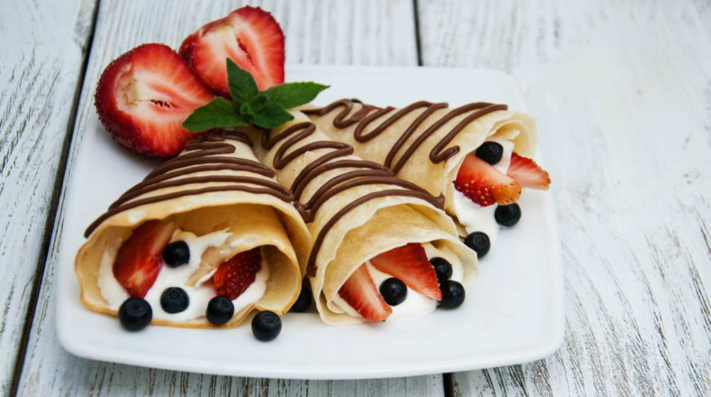
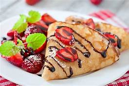

te ofrecemos muchas recetas de cocina que puedes
elaborar facilmente sin la necesidad de gastar mucho dinero,
te brindamos una exelente descripcion que te indica los
ingredientes a emplear y el procedimiento paso a paso, para
la elaboracion de algun plato o bebida.
CREPAS DE FRESA Y NUTELLA

LO MEJOR DE CREPAS

Prepara unas crepas dulces, un rico postre para consentir a tus seres queridos en esta cuarentena ¡aquí la receta!
Ingredientes
250g de harina de trigo
5g de sal
10g de azucar
500ml de leche
1 cda de mantequilla
3 piezas de huevo
4 g de mantequilla derretida
250g de nutella
<250g de fresa
Elaboracion (pasos)
bate la leche con los huevos y adiciona la mantequilla derretida pero fria.
combina la mezcla de los productos junto con la mezcla de los liquidos.
refigera la mezcla de 30 minutos antes de utilizarla.
calienta el sarten de crepas y engrasa el fondo con un poco de mantequilla.
con la ayuda de un cucharon, coloca un poco e mezcla sobre el sarten caliente, girando la mezcla con la pala especial.
cocina hasta que los bordes se despeguen un poco o sten ligeramente dorados.
voltea con l ayuda de una espatula y cocina por el otro lado.
retira del sarten de inmediato y dejalo enfriar completamente en una charola o plato.
rellene con nutella y fresas.
decora la superficie con fresas.
VIDEO
En esta pagina te brindamos ideas de como ENDULZARTE tu vida!
{kind=link}